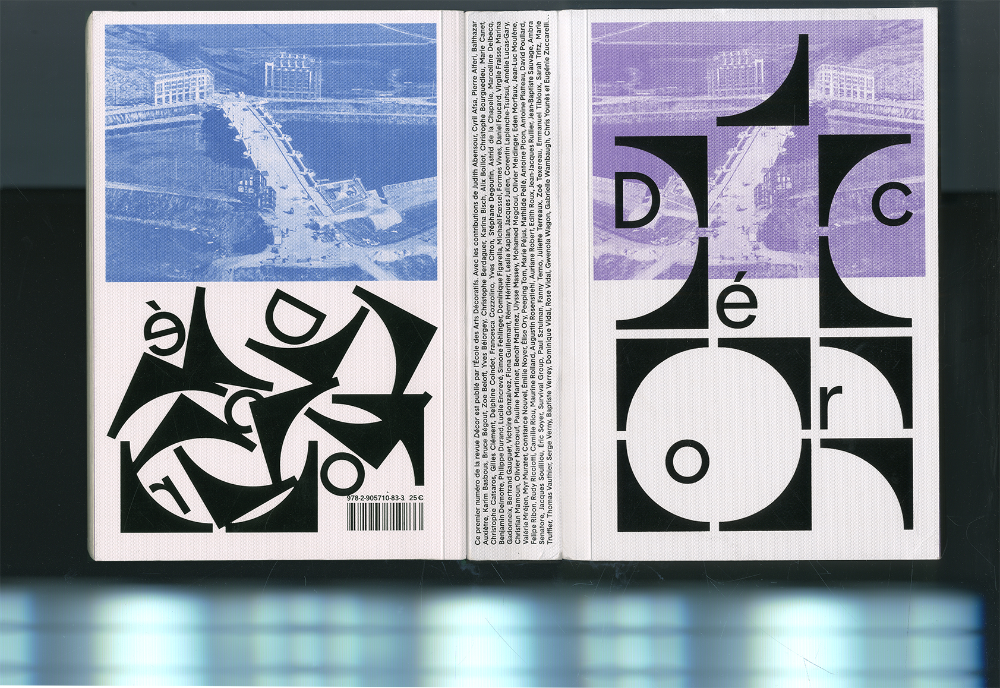
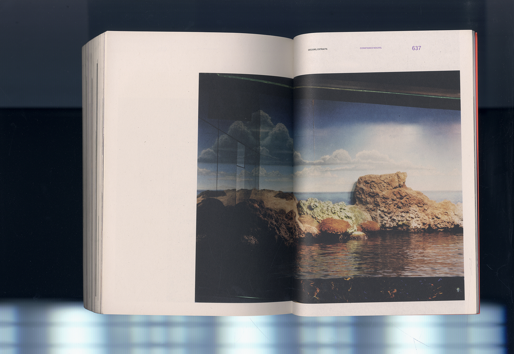
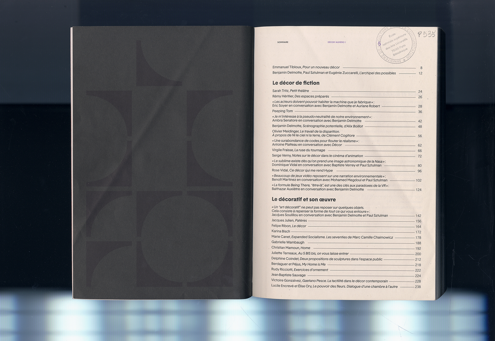
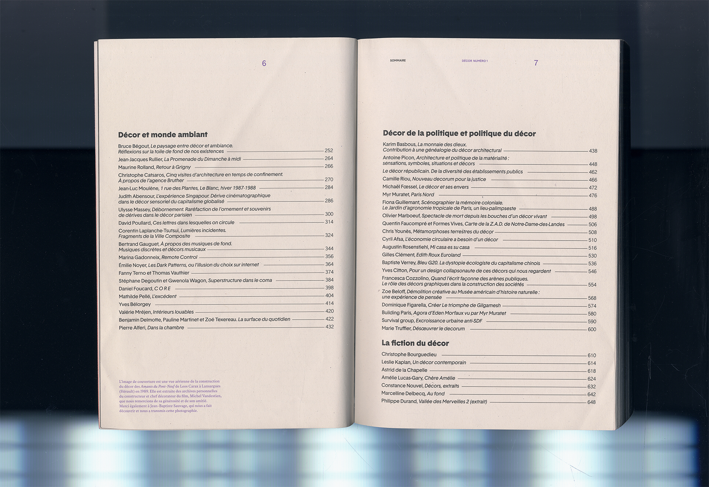

(fig.1)

(fig.2)



Placé sous la direction de Paul Sztulman, Benjamin Delmotte et moi-même, respectivement enseignants et étudiante à l’Ensad, ce premier numéro (fig.1) fait appel à des auteur.es provenant des différents champs de la théorie (philosophie, histoire de l’art, sciences sociales,..) ainsi que de la création littéraire et artistique mais aussi à des étudiant.es de l’École ou de jeunes talents.
Traiter la notion de « décor » implique au moins deux présupposés : d’une part que la critique moderne de l’ornementation et du décoratif n’a pas eu raison du décor; et d’autre part que la réhabilitation ludique et parfois cynique du décoratif dans le postmoderne ne suffit pas à rendre compte du décor contemporain. Le décor reste à l’œuvre, autant quand on prétend le dépasser que lorsque l’on le recouvre par l’emphase décorative. Il s’agit donc de réfléchir à la pratique actuelle des décorateur.ice.s, que ce soit au théâtre, au cinéma, dans les jeux vidéo ou la réalité augmentée, ainsi qu’aux propositions artistiques qui incorporent cette dimension. Mais plus largement, il s’agit de comprendre cette notion en un sens qui déborde celui du décor de fiction pour étendre sa désignation à l’ensemble de l’environnement quotidien et montrer à quel point le décor touche à l’organisation même du réel dans sa dimension esthétique, sociale et politique.
Ce volume initial de la revue Décor est publié par l'École des Arts Décoratifs de Paris. Conception graphique par Jean-Baptiste Burguet et Hugo Chastan en harmonie avec Fanette Mellier, Claire Moreux et Clément Vauchez. Avec les contributions de Judith Abensour, Cyril Afsa, Pierre Alferi, Balthazar Auxiètre, Karim Basbous, Bruce Bégout, Zoe Beloff, Yves Bélorgey, Christophe Berdaguer, Karina Bisch, Alix Boillot, Christophe Bourguedieu, Marie Canet, Christophe Catsaros, Gilles Clément,Delphine Coindet,Francesca Cozzolino, Yves Citton, Stéphane Degoutin, Astrid de la Chapelle, Marcelline Delbecq, Benjamin Delmotte, Philippe Durand, Lucile Encrevé, Simone Fehlinger, Dominique Figarella, Michaël Fossel, Formes Vives, Daniel Foucard, Virgile Fraisse, Marina Gadonneix, Bertrand Gauguet, Victoire Gonzalvez, Fiona Guillemant, Rémy Héritier, Leslie Kaplan, Jacques Julien, Corentin Laplanche-Tsutsui, Amélie Lucas-Gary, Christian Mamoun, Olivier Marbouf, Pauline Martinet, Benoit Martinez, Ulysse Massey, Mohamed Megdoul, Olivier Meidinger, Eden Morfaux, Jean-Luc Moulène, Valérie Mréjen, Myr Muratet, Constance Nouvel(fig.2), Emilie Noyer, Elise Ory, Peeping Tom, Marie Péjus, Mathilde Pellé, Antoine Picon, Antoine Platteau, David Poullard,Felipe Ribon, Rudy Ricciotti, Camille Riou, Maurine Rolland, Augustin Rosenstiehl, Auriane Robert, Edith Roux, Jean-Jacques Rullier, Jean-Baptiste Sauvage, Ambra Senatore, Jacques Soulillou, Éric Soyer, Survival Group, Paul Sztulman, Fanny Terno, Juliette Terreaux, Zoé Texereau, Emmanuel Tibloux, Sarah Tritz, Marie Truffier, Thomas Vauthier, Serge Verny, Baptiste Verrey, Dominique Vidal, Rose Vidal, Gwenola Wagon, Gabrielle Wambaugh, Chris Younès et Eugénie Zuccarelli.